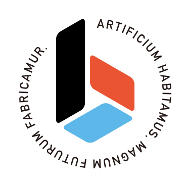

コードを書くヒト。
コードを書くヒト。
大枠のアイデアを書き出す。とりあえず動かす。期待どおりに動かない。考える。書く。動く。次を書く。
書いては消し、書いては消し。
この、木彫り師が木を削りながら中にある観音様を浮き上がらせる、というような行為が好きだ。
コードはコンピューターに対する命令書にしか過ぎない。エレガントな書き方は存在する。メンテのしやすい書き方というのも存在する。その一つ上のレベルに真にクリエイティブな一部の人だけが生み出せるオリジナリティと実用性を兼ね備えたコードというのもある。
自分は少なくともこの最後の部類の人間ではない。これらのまさに「アーティスト」とも呼べるこの人達はまた違う人種だ。自分はただのいちプログラマーに過ぎない。
ただひとつだけ言えるのは、コードは命令書であるということは我々が書いるものは「文章」であるということで、そして文章とは書かなければ決して上達しないということだ。
書いては消し、書いては消し。誰かに読ませて、書いては消し。
相手に自分の伝えたい事が伝わるか。誰が読んでもなんとなくわかるのか。そもそも手にとってもらえるようなタイトルをつけられたか。そういう自問自答を繰り返す時間も必要だが、とにかく。
書いては消し、書いては消し。
締め切りもある。文章のスタイルの拘りをどこまでひっぱるか。実利をまずとって、愚直に書くか。それをはかるためにもまずは目の前に文章を生み出さないといけない。
書いては消し、書いては消し。立ち止まってはまた書いては消し。
この行為をとにかくやり続けてきたから、それをやることが大して苦では無かったからここまでやってこれたのだと思う。
初めてまともにコードを書いたのは18の時だから、あれから数えて21年間とにかく書いては消し、書いては消しをしてきただけ。だけど、それなりに使えるプログラマーにはなれたと思う。
これからプログラマーになる人はコードを書くチャンスを逃してはいけない、と伝えたい。
仕事で与えられるプログラムを作るのももちろんそうだが、遊びでチャレンジできる新しい事、仕事のコードで自分が本当はやりたかったけど会社の都合でできなかった事、触ったことのない環境での開発。
これらの体験は新たな文章・コードを書かせてくれる。
本を読んで分かった気になってはいけない。自分の手で文字を刻み、バグを生み出し、またそれを直す。この行為を繰り返し繰り返し。
書いては消し、書いては消し。
誰かがまたそれを読んでくれる。それを元にまた書いては消し、書いては消し。
重要なのは早く、多く。一本の線でも多く、一文字でも多く、自分の中にあるコードロジックをこの現実世界に産み落とす事。何人たりともあなたからそれを奪わせてはいけない。この蓄積が我々プログラマー、「ビルダー（造るヒト）」の最も重要な財産だ。多分。
書いては消し、書いては消し…
buildersconというのやってます。興味があるヒトはこのあたりをチェック！

公式サイト
公式ブログ
主催のエントリ
../2016-01-18-6ab5c20c73f5/index.html#.11h186744
公式Twitter
https://twitter.com/builderscon